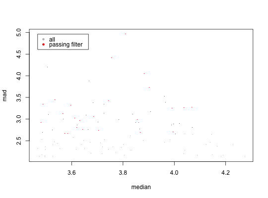

subset an expression dataset by extracting genes based on their level of variation
variationFilter(dat, score = c("mad", "sd", "cv"), dir = c("top", "bottom"), transform = c("none", "log2", "exp2", "log", "exp"), ngenes = NULL, min.score = NULL, min.log = 1, rnd = 4, do.plot = FALSE, pch = ".", lgnd.coord = 1, do.log = "", qnt.lev = 0.5, min.qnt = -Inf, no.affx = FALSE, verbose = TRUE)
an expressionSet object
type of variation measure to use (can be 'mad', 'sd', or 'cv')
direction of the gene ranking ('top': highest varying genes; 'bottom': lowest varying genes)
transform the data before measuring variation
number of top (or bottom) genes to extract
plot the center vs. scale plot with selected genes highlighted
indicates whether to log the "x", "y", or "xy" axes, or "" none
the filtered expressionSet object
# select the top 100 genes by median absolute deviation (mad) and also generate plot # Use example data, for data set information: ?eSet.brca.100 data(eSet.brca.100) variationFilter(eSet.brca.100,score='mad',ngenes=50,do.plot=TRUE)#> Variation filtering based on mad .. done. #> Selecting top 50 by mad .. done, 50 genes selected. #> Creating scatter plot ..#> done.#> ExpressionSet (storageMode: lockedEnvironment) #> assayData: 50 features, 977 samples #> element names: exprs #> protocolData: none #> phenoData #> sampleNames: TCGA_E9_A1RC TCGA_BH_A0B1 ... TCGA_D8_A1J9 (977 total) #> varLabels: bcr_patient_barcode bcr_patient_uuid ... TN_status (42 #> total) #> varMetadata: labelDescription #> featureData #> featureNames: ENSG00000162989 ENSG00000114248 ... ENSG00000113396 (50 #> total) #> fvarLabels: Gene_Symbol Entrez Ensg_id #> fvarMetadata: labelDescription #> experimentData: use 'experimentData(object)' #> Annotation: RNASeq